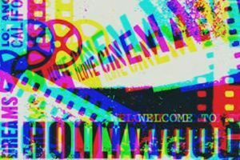

Este sitio fue creado con el propósito de difundir información sobre la historia del cine, desde sus inicios en las postrimerías del siglo XIX, siguiendo su evolución a lo largo de todo el siglo XX.
Realizaremos un recorrido a través de las corrientes cinematográficas más importantes de la historia, los directores más emblemáticos e influyentes y una galería de imágenes con los afiches promocionales de las películas más importantes de la historia.
Los invitamos a comenzar este recorrido por la apasionante historia del cine. Esperamos que lo disfruten.
Las corrientes cinematográficas

En esta sección van a encontrar un recorrido por aquellas corrientes cinematográficas que consideramos fundamentales para el desarrollo y la evolución del arte cinematográfico a lo largo del siglo XX.
El cine no nace como un arte, esa idea vendrá décadas más tarde de su creación, sino que nace como un fenómeno ligado a la ciencia y la tecnología. Lo que Louis Lumiere pretendía presentar, con pocas expectativas, pero finalmente mucho éxito, aquel 28 de diciembre de 1895, no era una disciplina artística, tampoco un entretenimiento de masas, sino un invento: el cinematógrafo: una máquina capaz de registrar imágenes reales dinámicas, en movimiento; algo totalmente impensado para la época.
A partir de ese momento, su evolución fue fulminante. Atravesando crisis sociales y económicas, guerras y todo obstáculo imaginable, esa máquina se fue trasformando en creadora de mitos, instrumento ideológico, documento de época, espectáculo, industria, arte.
Como en toda disciplina artística, los artífices de la obra son los artistas. Ellos son los que gracias a su pasión escriben la historia del arte, nos dejan sus legados para siempre. El caso del cine es más complejo ya que es un arte que requiere del trabajo de un equipo; director, productor, escenógrafo, vestuarista, maquilladores, guionistas, sonidistas, actores, actrices, camarógrafos etc. todos son parte del proceso creador cinematográfico. Sin embargo, sin dudas, el gran artífice de los films, su creador, es el director.
En esta parte del recorrido, nos vamos a centrar en aquellos directores que consideramos más representativos para la historia del séptimo arte. Nos encontraremos con personalidades muy diferentes, historias apasionantes, ruinas económicas, saltos a la fama, amor y pasión por el cine, en algunos casos, amor y pasión por la tecnología en otros, y porque no, amor y pasión por la industria y el dinero en tantos otros.
Te invitamos a recorrer la galería de fotos. En ella encontrarás una selección de los carteles promocionales de los films más emblemáticos de la historia del cine.
Consideramos que es una forma interesante y entretenida de reflejar la evolución del cine, en este caso, desde la gráfica de cada época. Cada imagen cuenta con su título y fecha de estreno.
.jpg)
.jpg)
.jpg)
.jpg)